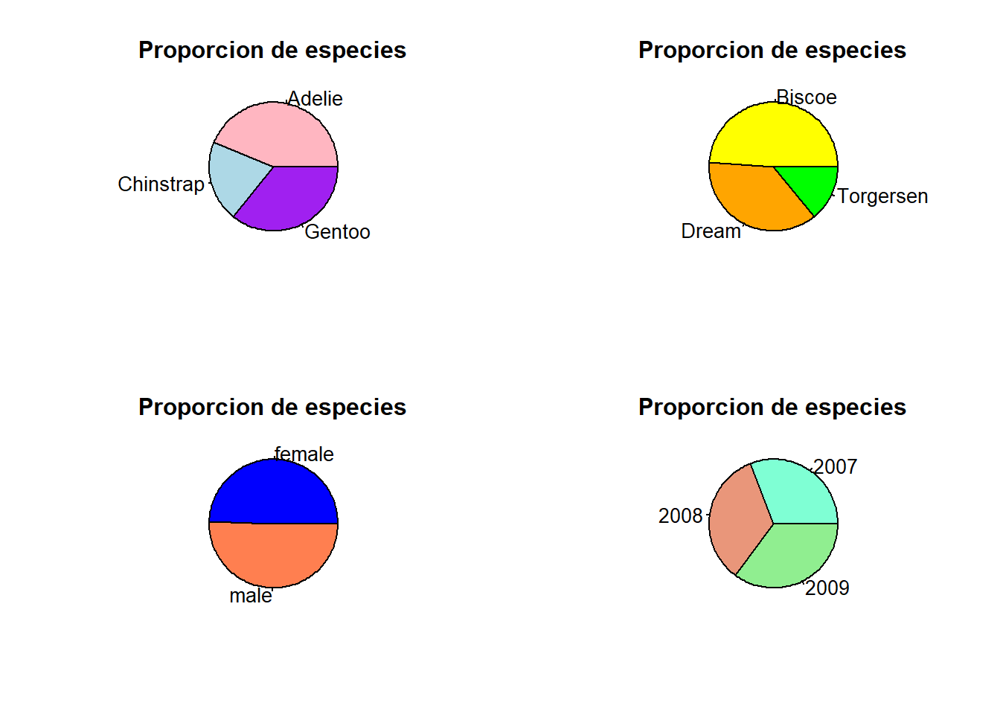
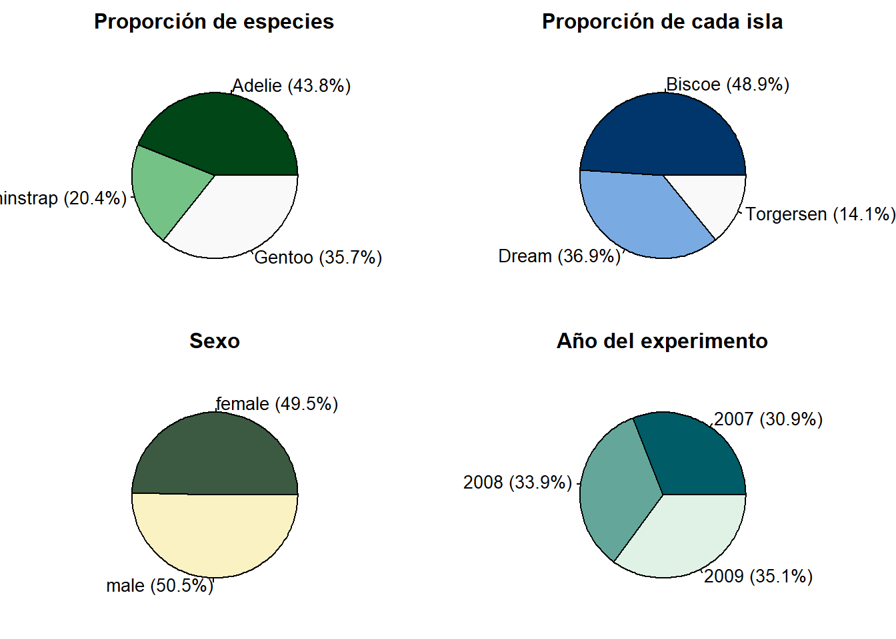
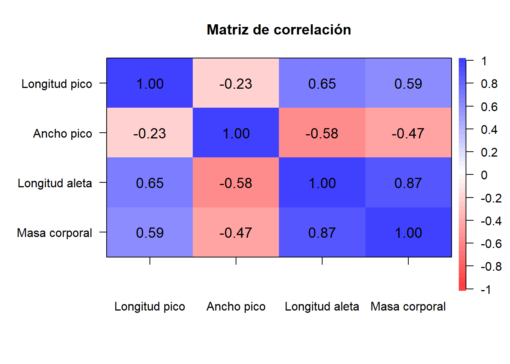

library(palmerpenguins)
datos <- penguinsEntrega 1: Pingüinos
Con lo que sabéis de R base, realizad un análisis exploratorio de datos y redactad un reporte con los hallazgos más importantes. No olvidéis agregar en el reporte el URL de vuestro repositorio de GitHub.
Descripción de los datos
El data frame consta de 344 observaciones y 8 variables. Cada muestra representa un pingüino al que se le ha extraido la siguiente información:
species: Especie (Adélie, Chinstrap y Gentoo)island: La isla a la que pertence (Biscoe, Dream o Torgersen)bill_length_mm: Longitud del pico (mm)bill_depth_mm: Ancho del pico (mm)flipper_length_mm: Longitud de la aleta (mm)body_mass_g: Masa corporal (g)sex: sexo (macho o hembra)year: año en que se tomó la muestra
A continuación, mostramos un resumen cuantitativo del data frame:
summary(datos) species island bill_length_mm bill_depth_mm
Adelie :152 Biscoe :168 Min. :32.10 Min. :13.10
Chinstrap: 68 Dream :124 1st Qu.:39.23 1st Qu.:15.60
Gentoo :124 Torgersen: 52 Median :44.45 Median :17.30
Mean :43.92 Mean :17.15
3rd Qu.:48.50 3rd Qu.:18.70
Max. :59.60 Max. :21.50
NA's :2 NA's :2
flipper_length_mm body_mass_g sex year
Min. :172.0 Min. :2700 female:165 Min. :2007
1st Qu.:190.0 1st Qu.:3550 male :168 1st Qu.:2007
Median :197.0 Median :4050 NA's : 11 Median :2008
Mean :200.9 Mean :4202 Mean :2008
3rd Qu.:213.0 3rd Qu.:4750 3rd Qu.:2009
Max. :231.0 Max. :6300 Max. :2009
NA's :2 NA's :2 head(datos)# A tibble: 6 × 8
species island bill_length_mm bill_depth_mm flipper_length_mm body_mass_g
<fct> <fct> <dbl> <dbl> <int> <int>
1 Adelie Torgersen 39.1 18.7 181 3750
2 Adelie Torgersen 39.5 17.4 186 3800
3 Adelie Torgersen 40.3 18 195 3250
4 Adelie Torgersen NA NA NA NA
5 Adelie Torgersen 36.7 19.3 193 3450
6 Adelie Torgersen 39.3 20.6 190 3650
# ℹ 2 more variables: sex <fct>, year <int>Primero de todo, observemos que hay muestras que tienen valores desconocidos (NA), por tanto, vamos a eliminar dichas observaciones:
datos = na.omit(datos)
summary(datos) species island bill_length_mm bill_depth_mm
Adelie :146 Biscoe :163 Min. :32.10 Min. :13.10
Chinstrap: 68 Dream :123 1st Qu.:39.50 1st Qu.:15.60
Gentoo :119 Torgersen: 47 Median :44.50 Median :17.30
Mean :43.99 Mean :17.16
3rd Qu.:48.60 3rd Qu.:18.70
Max. :59.60 Max. :21.50
flipper_length_mm body_mass_g sex year
Min. :172 Min. :2700 female:165 Min. :2007
1st Qu.:190 1st Qu.:3550 male :168 1st Qu.:2007
Median :197 Median :4050 Median :2008
Mean :201 Mean :4207 Mean :2008
3rd Qu.:213 3rd Qu.:4775 3rd Qu.:2009
Max. :231 Max. :6300 Max. :2009 Gráficos
A continuación, mostraremos algunas representaciones visuales que dan una información descriptiva de los datos.
Diagramas de sectores
Realizamos un diagrama de sectores de las variables species, island, sex y year.
par(plt = c(0.1, 0.9, 0.1, 0.8))
par(mfrow=c(2,2))
pie(prop.table(table(datos$species)),col = hcl.colors(3, "Greens 3"), main = "Proporción de especies")
pie(prop.table(table(datos$island)),col = hcl.colors(3, "Blues 3"), main = "Proporción de cada isla")
pie(prop.table(table(datos$sex)), labels = c("Hembra", "Macho"), col = hcl.colors(3, "Fall"), main = "Sexo")
pie(prop.table(table(datos$year)),col = hcl.colors(3, "Mint"), main = "Año del experimento")
Histogramas
A continuación, realizaremos unos histogramas de las variables bill_length_mm, bill_depth_mm, flipper_length_mm y body_mass_g para ver a simple vista la distribución de la población.
par(mfrow=c(2,2))
hist(datos$bill_length_mm, main='Longitud del pico (mm)', breaks = 30, col = 'lightblue',
xlab = "Longitud pico", ylab = "Frecuencia")
hist(datos$bill_depth_mm, main='Anchura del pico (mm)', breaks = 35, col = 'coral3',
xlab = "Ancho pico", ylab = "Frecuencia")
hist(datos$flipper_length_mm, main='Longitud de la aleta (mm)', breaks = 30, col = 'lightgreen', xlab = "Longitud aleta", ylab = "Frecuencia")
hist(datos$body_mass_g, main='Masa Corporal (g)', breaks = 30, col = 'pink',
xlab = "Masa corporal", ylab = "Frecuencia")
Medias muestrales de las variable en función de cada especie
Comparemos las medias de las variables cuantitativas en función de cada especie, que corresponden con las características físicas de cada pingüino.
Para ello, dividamos el data frame por especies:
ping_adelie = datos[datos$species=="Adelie",]
ping_chinstrap = datos[datos$species=="Chinstrap",]
ping_gentoo = datos[datos$species=="Gentoo",]Longitud del pico
Veamos la media de la longitud del pico de cada especie
mean(ping_adelie$bill_length_mm)[1] 38.82397mean(ping_chinstrap$bill_length_mm)[1] 48.83382mean(ping_gentoo$bill_length_mm)[1] 47.56807Notemos que los pinguinos de especie Adelie de media tienen el pico mas corto que las otras dos especies.

Ancho del pico
mean(ping_adelie$bill_depth_mm)[1] 18.34726mean(ping_chinstrap$bill_depth_mm)[1] 18.42059mean(ping_gentoo$bill_depth_mm)[1] 14.99664Notemos que los pinguinos de especie Gentoo de media tienen el pico menos ancho que las otras dos especies.

Longitud de la aleta
mean(ping_adelie$flipper_length_mm)[1] 190.1027mean(ping_chinstrap$flipper_length_mm)[1] 195.8235mean(ping_gentoo$flipper_length_mm)[1] 217.2353Notemos que los pinguinos de especie Gentoo de media tienen la aleta más larga que las otras dos especies.

Masa corporal
mean(ping_adelie$body_mass_g)[1] 3706.164mean(ping_chinstrap$body_mass_g)[1] 3733.088mean(ping_gentoo$body_mass_g)[1] 5092.437Notemos que los pinguinos de especie Gentoo de media tienen mas masa corporal que las otras dos especies. Y como hemos visto en el apartado de correlación, seguramente se debe a que la especie Gentoo es más grande que las otras dos.

Correlación de las variables
Veamos si existe correlación, tanto positiva como negativa de las variables numéricas. Para ello, mostraremos una matriz de correlaciones.
library(psych)
datos2 = datos[,c(-1,-2,-7,-8)] # eliminamos las variables no numéricas
nombres = c("Longitud pico", "Ancho pico", "Longitud aleta", "Masa corporal")
corPlot(datos2, cex = 0.8, main = "Matriz de correlación", labels = nombres)
Cabe destacar la correlación fuerte positiva (valor de +0.87) entre la masa corporal y la longitud de las alas de los pingüinos, es decir, a mayor masa corporal, mayor longitud de alas, lo que da a pensar que si hay una especie que tenga, en general, mayor peso, será porque el animal es más grande.
También hay correlación moderadamente fuerte positiva (valores de +0.59 y +0.65) entre la longitud del pico y la masa corporal, y la longitud del pico y la longitud de la aleta.
Por otro lado, se presenta una correlación moderadamente fuerte negativa (-0.58) entre la longitud de la aleta y el ancho del pico, es decir, cuanto más larga es la aleta, menos ancho el pico y viceversa.
Comparaciones geográficas
Una vez hemos estudiado las medias de los valores cuantitativos de las características de los pingüinos, podemos ver si hay diferencias entre islas.
PENSAR BÉ COM ENFOCAR-HO, ES A DIR, SERIA INTERESSANT VEURE QUINES DADES TENEN MAJOR DISPERSIÓ PER ESTUDIAR SI AFECTA GEOGRAFICAMENT, IE, IMAGINA QUE SURT QUE ES PINGÜINOS GENTOO TENEN ES BEC MES LLARG I A MES MOSTREN DISPERSIO EN SES DADES, PUES POT SER QUE A UNA ILLA, PER ES TIPUS DE MENJAR, TENGUIN ES BEC MES LLARG O MES CURT I FACI ALTERAR SA MITJANA
Nota: las conclusiones extraidas sobre las medias no pueden extrapolarse a toda la población.